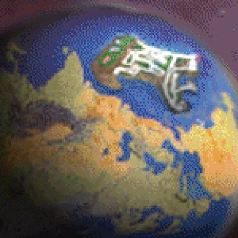

Tony's profile picture on Twitter/X
Tony Domenico (also known as Mr. Yes and Thrompd) is the creator of the Petscop web series. He mainly communicates publicly through Twitter at @pressedyes.
In the Book of Baby Names and in the list of recordings, one of the testers is named Tony, with the description being "dummy". Tony later referenced this when he came forward as being the creator of Petscop.[1]
Petscop was originally presented with its creator being unknown. While various theories were made over the series' run on who may have been behind Petscop, Tony was not found until November 2019, which was coincidentally when he planned to come forward about Petscop.[2]
Originally, on November 13, 2019, Tony jokingly tweeted "I made PetCop".[3] Coincidentally, not knowing about this tweet, on November 14, u/Mewmore shared on Reddit a video on YouTube of the game "Nifty" from 2013, which contained elements from Petscop.[4]
On November 14, 2019, Tony more clearly came forward about being the creator of Petscop, and shared some images of his work to prove it. He also further clarified that Petscop had concluded "except for one thing" (which was later shown as the Petscop Soundtrack).[5] On November 15, he further proved that he was the creator by modifying the Channel's description.[6]
After this, Tony has gradually shared some additional information about Petscop's development on Twitter, as well as within interviews.[7]
The earliest known direct work on Petscop is from December 2015, based on an unlisted YouTube video titled "Sprite"[8] that Tony shared on Twitter/X on November 9, 2021.[9] Petscop was programmed in C++ with Cinder.[10] The real Petscop program is technically playable, but not as a real game; Tony has stated that he doesn't plan to release it.[11]
Around the time that Tony came forward about Petscop, one of the images he shared was captioned "Care". This image resembles Casket 2.[12]
On November 14, 2019, Tony showed a "Care virtual pet" concept from 2013.[13] He later explained on November 25, that this was an early idea for Petscop.[14] On November 18, 2019, Tony went into detail on how Petscop used input recordings, and how they shaped the development of Petscop. They were originally created as an aid due to difficulties with screen capturing software. The implementation allowed for Tony to modify aspects of the game after the gameplay was recorded; later, this was noted to allow for the inputs to play back in a "different world".[15] He apparently lost the original input recordings for Petscop 1 and Petscop 4.[16]
On November 27, 2019, Tony mentioned the Care sound effects in the Sound Test were from recordings of him around 1997. The next day, he additionally published the Petscop Soundtrack.[17]
Starting in early December 2019 and finishing on December 16, 2019, Tony updated the videos on the channel to have subtitles. The next day, he enabled Community Contributions for fan translations of the subtitles. This feature was removed from YouTube entirely in September 2020, preventing further translations from being added. On December 31, 2019, Tony shared a video of an early concept for a Garalina logo intro.[18]
On March 26, 2022, Tony discussed that he might recreate some of the Petscop videos.[19] However, on July 30th, 2023 stated that he is no longer interested in re-releasing Petscop in any form.[20]
Some of Tony's previous works contain elements that were used in Petscop or that had inspiration taken from for Petscop.
Nifty is a game Tony released in July, 2007. In Nifty, the fictional development company of the video games developed in its story is named Garalina, which was reused for Petscop. The tiles in Nifty depict symbols that were reused for the room background symbols for Even Care and the symbol blocks. The word "nifty", when typed out with P2 to TALK inputs on the player 1 controller, is a cheat code that opens Draw Mode. One of the music tracks in the later part of Nifty is the basis of the "explore" song in Petscop, played during Room Impulse. The sound that plays when the code for the secret menu is successfully entered is reused directly from Nifty, where it is originally used as a jingle in certain circumstances.
The lore of Nifty consists of a meta-narrative, which claims that its developer, Garalina, originally released a game called "Nift" late in the year 2000. After a disaster took place in which players of Nift would commit suicide, Garalina quickly recalled all copies of the game, and went bankrupt within a couple of months. As the player progresses through puzzles in the game, text files are created which are written as press releases from Garalina. The readme file explains that Nift originally had a kind of memetic effect on the player, causing them to be personally attached to the game's mascot. When the mascot dies halfway through the game, the player became so emotionally shattered that they committed suicide. The game Nifty is a modified version of the game that did not have this memetic effect.
Nifty is how Tony was mainly found as being the identity of the creator of Petscop after an old clip of Nifty from August 2007 was found on YouTube[22] and shared on Reddit, though he had quietly announced that he was the creator coincidentally around the same time Nifty was found. Tony has officially stated that Nifty is not at all canon to Petscop.
Nifty can be found and downloaded on Tony's website here.
Tapers is a story that Tony posted in 2009. Some elements of Tapers were used to develop Petscop's story, though they were taken in a different direction from Tapers. These elements can be seen to have been possibly used for Petscop:
Tapers is not canon to Petscop.
Tapers can be found on Tony's website here.
WARNING: Tapers contains descriptions of violent and gory scenes; if sensitive to this type of content, please read with caution.
"Tarnacop" was a term used by Tony and some of his friends as a recurring theme. At one point after he came forward about Petscop, he shared an image on Twitter with the caption "Tarnacop robot 2007", which depicts a robot with the same logo shown on the Tarnacop machines in Petscop.[23]
As early as 2009,[24] Tony has had characters with the same names as Petscop characters that he has reused on multiple occasions. Most notably are of Care and Marvin, mainly within Tapers. The depictions of these characters have changed over time.
Around the time that Tony came forward about Petscop, he shared multiple images of old depictions of characters named Marvin and Care,[25][26] sometimes used in other projects. In one project from 2013 whose image was shared on Twitter, Care (closely resembling the depiction of Care in Petscop) is mentioned to be a "virtual pet" in a school basement.
In February 2021, Tony shared an image of a mockup from 2012 of an "adventure game/visual novel" on Twitter. He mentions that the game would have involved Care, Marvin, Mike, and Rainer.[27] He mentions in replies to the tweet that Petscop's characters of Paul and Tiara did not exist before Petscop.[28]
{kind=link}
{kind=link}
{kind=link}
{kind=link}